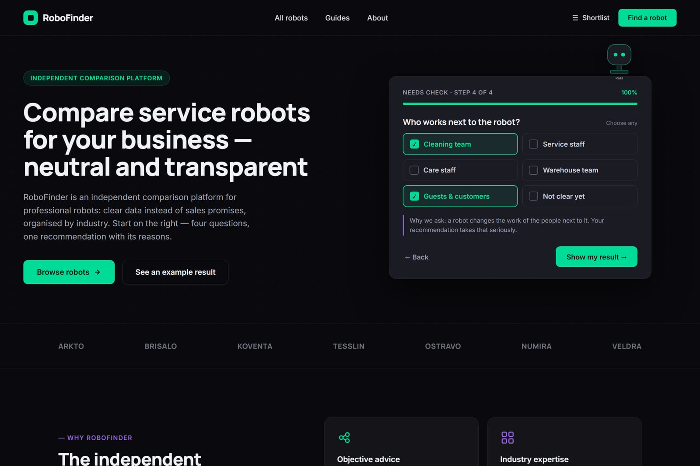

Alongside
UX research and design, internship project, 2026
Alongside is a redesign of a website where businesses compare and buy service robots: machines that clean floors, serve food, move goods or welcome visitors. I made it during a UX internship. The company is anonymised, and the name, the makers and all robot data in the prototype are invented.
The problem
The people who buy these robots are rarely engineers. They are facility, hotel and care managers who have to choose a machine they cannot fully judge. In four user interviews and in feedback from partner agencies, the same problems came up. The matching tool was hidden far down the page, and one participant scrolled seven times to find it. The form allowed only one answer, although most businesses work in several areas. Comparisons listed more than a hundred specifications, and empty fields made the data look unreliable. Product photos made large robots look small.
What I changed
I moved the needs check to the top of the page and let every question take several answers. The result compares each robot with seven criteria chosen by the buyer and marks each one as met, not met or unknown. Missing data is named instead of left blank, so the buyer can see what still has to be asked. Every robot is drawn next to a person, so its real size is clear.



The question I added
None of the questions asked about the people who would work with the robot. A cleaning robot changes the work of the cleaning team, and a serving robot changes the work of the waiters. So the last step of the needs check asks who will work next to the robot. The result ends with a short note for that team: what the robot takes over, what stays with people, and why to talk with them before it arrives.
Open tensions
Some tensions stay open in the design. The site calls itself neutral but earns money from enquiries, so the result says this in one line. Showing unknown data makes the site look less certain, but it makes the decision easier to explain. And one page has to serve both a manager who wants a quick answer and an engineer who wants the full data sheet.
Reflection
My other projects are speculative. Here the goal was a clear page that leads to enquiries, and my contribution was to ask who else is affected by a purchase. The note for the team is still written for the buyer, not with the team. The people who will work next to the robot were not part of my interviews, and the prototype has not been tested with buyers. Both would be the next steps.
I built the prototype with Claude. It let me try an idea within hours, and it taught me to test carefully what only looks finished.